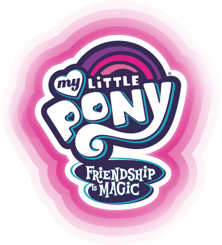
트와일라잇과 5명의 친구들과 함께 우정을 나누고 모험을 떠나세요
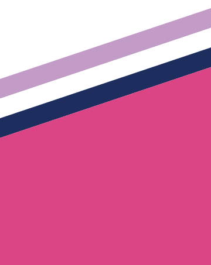
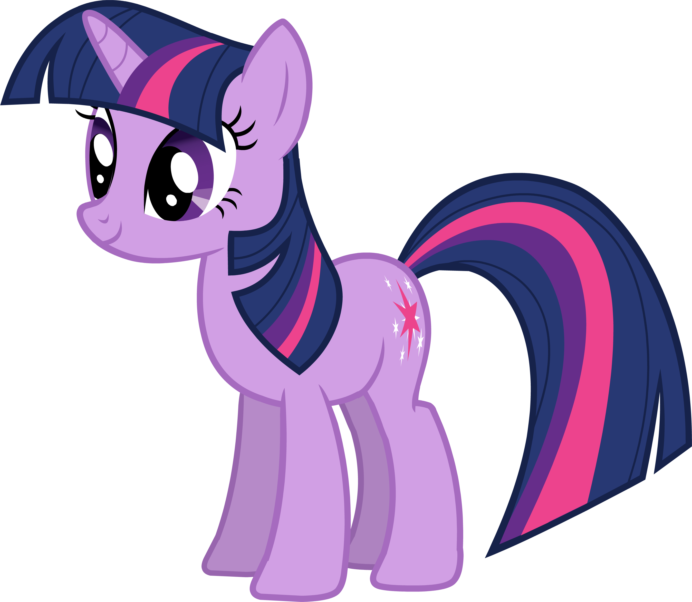
트와일라잇은 우정과 마법의 공주로 셀레스티아의 제자로서 우정의 마법을 공부하기위해 포니빌에 왔습니다.
그녀는 매우 논리적이고 모든것의 의문은 품는 호기심 많은 포니 이지만 그런 그녀의 깐깐함이 집착으로 이어지기도 합니다.
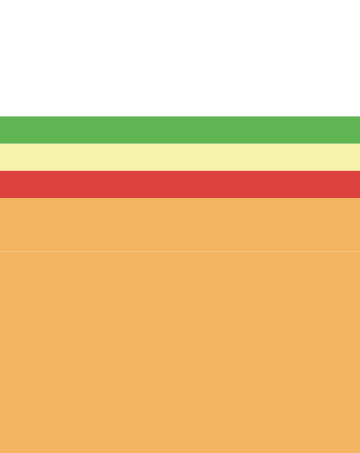
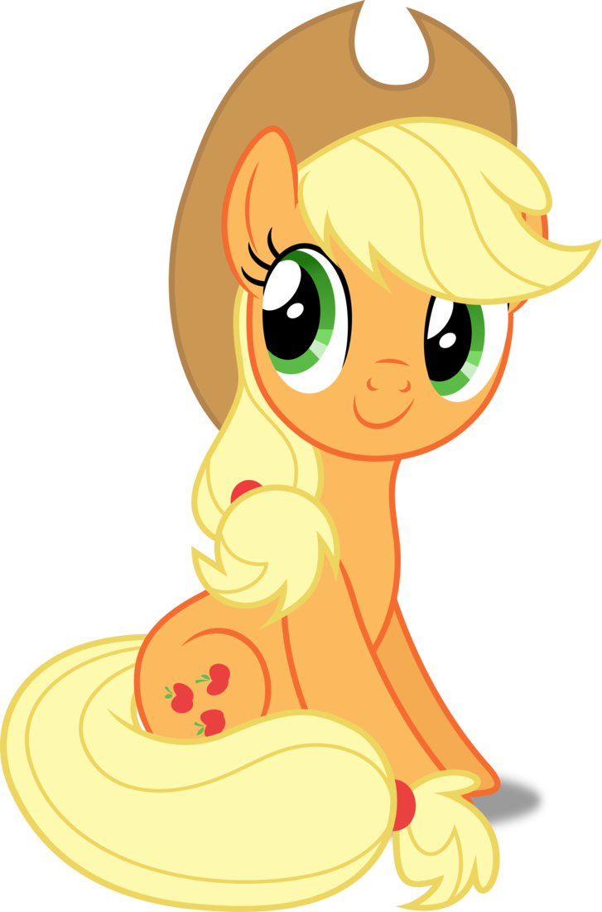
애플잭은 스위트 애플 농장에서 그녀의 가족들과 함께 사과농사를 지으며 살고 있는 성실한 포니입니다. 그녀는 6명의 친구들 가운데서 정직함을 대표하며 항상 그녀의 친구들 한테 진실된 조언을 줍니다
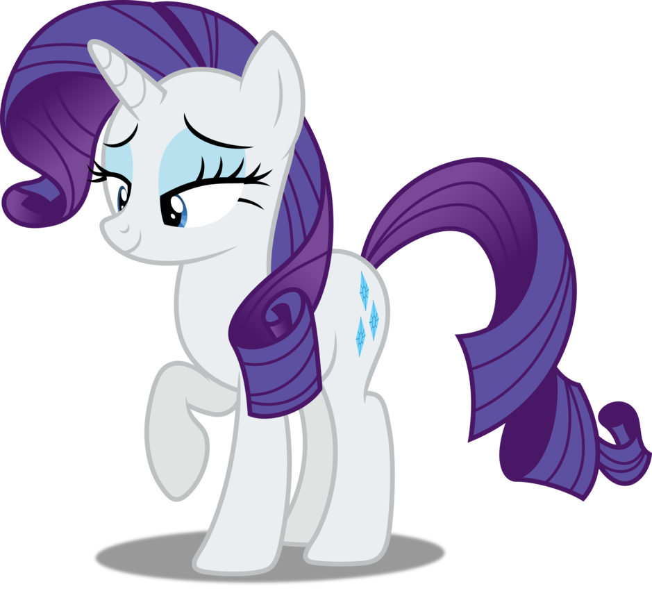
래리티는 포니빌에서 가장 패셔너블한 포니로 아낌없는 마음씨를 가지고 있어 친구들에게 그녀의 재능을 나누며 자신의 친구들이 가장 아름다운 모습을 보일수 있게 항상 신경씁니다. 하지만 패션을 향한 그녀의 열정과 깐깐함이 그녀의 친구들을 괴롭히기도 합니다.
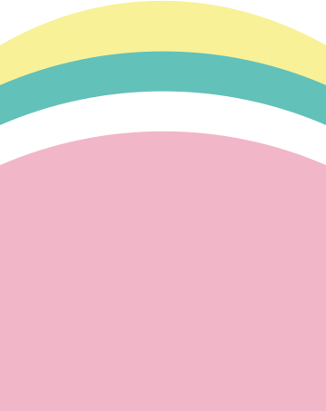
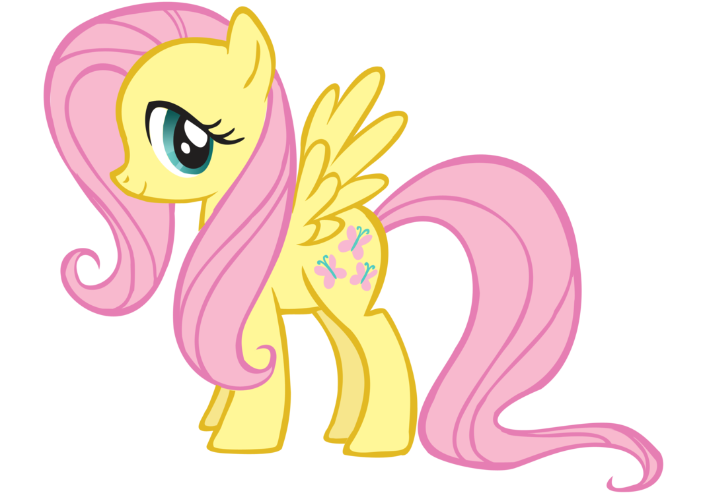
플러터샤이는 부끄럼을 많이타지만 매우 상냥한 포니로 그녀의 오두막에서 동물 친구들을 돌보며 살고 있습니다. 그녀는 친구들에게 매우 자상하며 친절하지만 너무 소심하고 소극적이 면모를 보이기도 합니다.
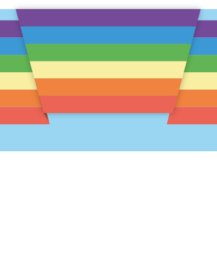
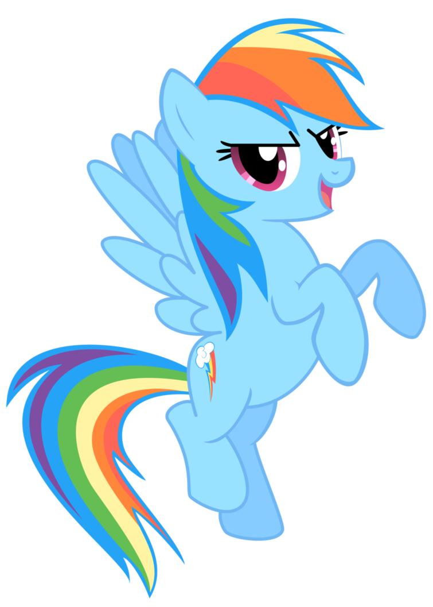
레인보우대쉬는 원더볼트의 일원으로 그녀의 친구들 가운데서 가장 쿨하고 의리있는 친구입니다. 그녀는 자존심이 매우 강하며 그녀의 친구들을 매우 아끼지만 가끔씩 그런 그녀의 강한 자존심 때문에 자만심에 빠지기도 합니다.
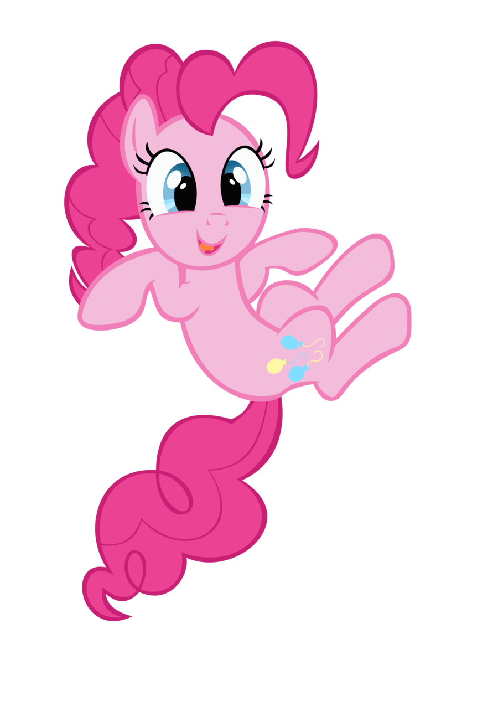
핑키파이는 이퀘스트리아에서 가장 귀엽고 활발한 포니로 그녀는 파티를 무지 좋아하며 그녀의 친구들에게 미소를 심어주기 위해 최선을 다합니다. 하지만 그녀의 넘치는 에너지가 그녀의 친구들을 피곤하게 하기도 합니다.
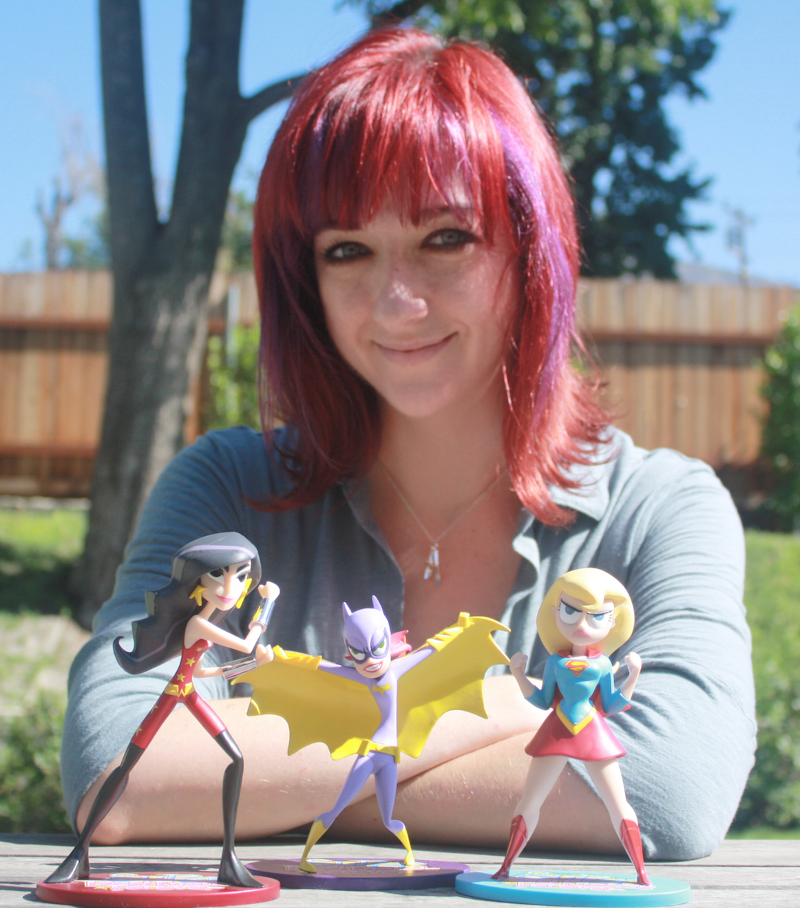
로렌 파우스트는 쇼의 제작자로서 시즌 1에서는 최고 프로듀서로서, 시즌2에서는 컨설팅 프로듀서로서 참여하였습니다. 1세대 부터 My little pony의 팬이였던 그녀는 쇼를 제작해 달라는 해즈브로의 제안을 흔쾌힌 받아들였고 그녀가 만든 캐릭터들의 입체적이고 주도적인 성격은 수많은 팬들의 마음을 사로잡았습니다.